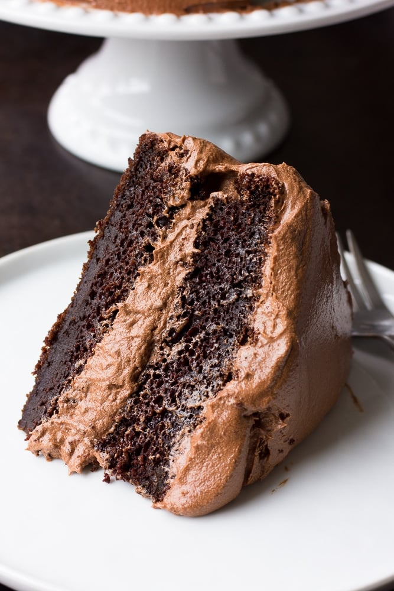

Chocolate Cake

The Best Vegan Chocolate Cake
The Best Vegan Chocolate Cake- A quick and easy recipe,
made in 1 bowl! This really is the best chocolate cake ever, vegan or otherwise.
It's super moist, rich and full of chocolate.
You won't believe how rich and delicious this cake tastes. This is a super easy
recipe that anyone can make!
Ingredients
- Almond milk
- ACV
- Flour
- Sugar
- Cocoa powder
- Baking powder
- Baking soda
- salt
- oil
- Apple sauce
- Vanilla
- Boiling water
Steps
- Preheat oven to 350 degrees F and grease two 9-inch cake pans. I also line them with parchment rounds and lightly flour for easy removal of the cakes later.
- Measure 1 cup unsweetened almond milk and add the tablespoon of vinegar to it. Stir slightly and set aside to curdle.
- In a large bowl, add the flour, sugar, cocoa powder, baking powder, baking soda and salt. Whisk well to combine.
- Now add the oil, applesauce, vanilla and almond milk/vinegar mixture. Mix on medium speed with a hand mixer (or stand mixer with the paddle attachment) until well combined.
- Lower the speed and carefully pour in the boiling water, continuing to mix into the cake batter until combined. The batter will seem very runny at this point; that is how it should be, trust me!
- Divide the batter evenly between your cake pans. Bake for 30-35 minutes, or until a toothpick inserted in the center comes out clean.